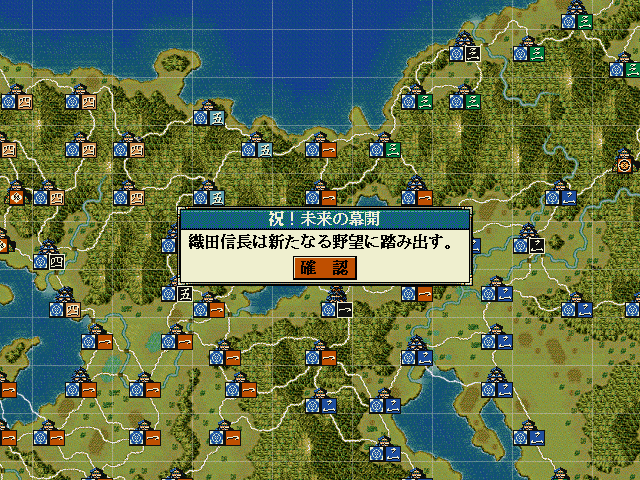

エンディング情報型＆ カスタム::On_エンディング判定時(int 大名番号) {
return NULL;
}
エンディング情報型 x = { 大名番号, "エンディングダイアログのタイトル名(最大全角７文字)", "エンディングダイアログのメッセージ(最大全角２１文字)" }
エンディング情報型＆ カスタム::On_エンディング判定時(int 大名番号) {
// プレイヤーが担当している大名が、ターンを終了すると、無条件でエンディングに行く
// その際に、独自のエンディングダイアログメッセージへと変更する。
int iDaimyoID = 大名番号 - 1;
if (0 <= iDaimyoID && iDaimyoID < 最大数::大名情報::配列数) {
// エンディングに行くためには、「プレイヤが担当している大名が」という条件は必須
if (Is_プレイヤ担当大名(iDaimyoID)) {
int iBushouID = p大名情報[iDaimyoID].大名【武将番号】 - 1;
デバッグ出力 << "エンディング判定" << endl;
エンディング情報型 myEnding = { 大名番号, "祝！○○○○", Get_名字(iBushouID) + Get_名前(iBushouID) + "は△△を達成した!!" };
return myEnding;
}
}
// 変更しない場合NULL
return NULL;
}
エンディング情報型＆ カスタム::On_エンディング判定時(int 大名番号) {
// エンディングを抑制する。1572年までは、いかなるエンディングも発生しない。
if (Get_西暦() < 1572) {
int iDaimyoID = 大名番号 - 1;
エンディング情報型 myNotEnd = { 大名番号, エンディングフラグ::無効 };
// 全てのエンディングを封じるためには、大名番号が範囲に収まる場合と、収まらない場合の両方を封じておく必要がある。
if (0 <= iDaimyoID && iDaimyoID < 最大数::大名情報::配列数) {
// 実際にはここに何らかの条件を追加することになるだろう。
return myNotEnd;
// 大名番号が範囲外の時も封じておく必要がある。
} else {
return myNotEnd;
}
}
// 変更しない場合NULL
return NULL;
}
エンディング情報型＆ カスタム::On_エンディング判定時(int 大名番号) {
// 全てのエンディングを封じる条件
if (Get_西暦() < 1572) {
エンディング情報型 myNotEnd = { 大名番号, エンディングフラグ::無効 };
return myNotEnd;
}
// ここから下は、エンディングを封じる以外の時
// プレイヤが担当している大名が、織田信長で、配下に柴田勝家がいる時、
// ターン終了時に、寸劇をしてエンディングへ
int iDaimyoID = 大名番号 - 1;
// プレイヤが担当している大名だ
if (Is_プレイヤ担当大名(iDaimyoID)) {
int iDaimyoBushouID = p大名情報[iDaimyoID].大名【武将番号】 - 1;
int 一人目 = Get_武将番号【配列用】(顔番号::織田信長); // 織田信長の顔番号の人
int 二人目 = Get_武将番号【配列用】(顔番号::柴田勝家); // 柴田勝家の顔番号の人
// 一人目が信長で、二人目の柴田勝家が、信長と同じ大名に所属。(即ち柴田勝家は信長の配下)
if (一人目 == iDaimyoBushouID && Is_自分と相手は同じ大名家所属(一人目, 二人目)) {
// フェイドアウト・フェイドインを挟みつつ、信長の居城にカメラを移動
int i大名の城 = p大名情報[iDaimyoID].所属居城【城番号】 - 1;
フェイドアウト();
カメラ移動(i大名の城);
フェイドイン();
// 二人で会話
噴出ダイアログ《通常・左上》開始(一人目, "我が光明が見えた" + ％わ（２）％(一人目, 二人目));
噴出ダイアログ《通常・右下》開始(二人目, ％相手％(二人目, 一人目) + "、\xA" + ％私％(二人目, 一人目) + "も苦労した甲斐が\x0A" + ％あります％(二人目, 一人目));
噴出ダイアログ《通常・左上》更新(一人目, "ううう");
噴出ダイアログ《通常・右下》更新(二人目, "えええ");
噴出ダイアログ《通常・左上》終了();
噴出ダイアログ《通常・右下》終了();
// エンディング
エンディング情報型 myEnding = { 大名番号, "祝！未来の幕開", Get_名字(iDaimyoBushouID) + Get_名前(iDaimyoBushouID) + "は新たなる野望に踏み出す。" };
return myEnding;
}
}
// 変更しない場合NULL
return NULL;
}
↓

↓